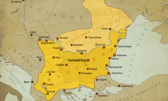
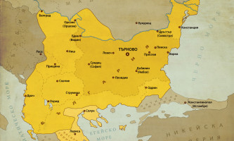
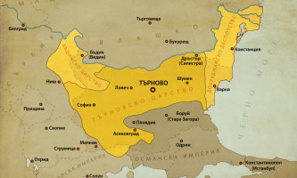

THE GREAT HISTORY OF BULGARIA
Втора българска държава (1185 – 1422)



В резултат на въстанието на Асен и Петър България е възстановена през 1185 година. За цар е определен по-големият брат Петър, но той не се справя добре с властта и затова през 1187 година отстъпва трона на брат си Асен. През следващите години страната започва да възвръща територията си – при двамата братя тя си връща Белградската и Браничевската област, част от отвъддунавските земи, Мизия, Северна Тракия и земите по Горна Струма. Византия, която е в криза, не може да спре напредването на българите. През 1196 година Асен е убит от братовчед си Иванко, а боляри убиват и царувалия отново за кратко след това Петър. Властта е поета от третия брат Калоян (1197), който е бил няколко години във византийски плен, но успява да се спаси. Той превзема последната ромейска крепост в Северна България – Варна. Освен това сключва уния с папа Инокентий III, с което страната получава авторитетно международно признание. Разширява България към Македония и Тракия. Цар Калоян успява да разгроми рицарите от Четвърти кръстоносен поход и така да спре експанзията им. В резултат на заговор е убит, начело на многохилядна войска пред портите на Солун. На престола застава племенникът му Борил. При него страната губи част от териториите си. Освен това е подозиран от народа в убийството на Калоян. Свален е от завърналия се в страната син на цар Асен I, Иван Асен II, през 1218 година. При Иван Асен II България постига най-голямото си териториално разширение по време на Втората българска държава и отново границите ѝ са на 3 морета. При Клокотница разбива епирския владетел Теодор Комнин и така той не успява да възстанови Византия. По времето на българския владетел Българската архиепископия става патриаршия (1235). Иван Асен II умира през 1241 година и оставя на наследниците си една обширна страна. След смъртта му обаче България изпада в криза. Страната губи много територии. Татарите започват да нападат България и страната изпада в зависимост от тях. Въпреки опитите на сина му Михаил II Асен да спре упадъка, страната е в криза. За кратко се разгаря гражданска война, която завършва с възкачването на трона на Константин Асен. Политиката му не дава желаните резултати. Убит през 1277 година от Ивайло. Ивайло разбива на няколко пъти татари и византийци, но не може да се задържи дълго на власт. Наследен е от Георги I Тертер При неговото управление хегемонията на татарите е пълна, но е преодоляна от сина му Светослав Тертер. Той присъединява някои територии, което прави и сина му Георги II Тертер. Михаил III Шишман Асен опитва да разшири България в Македония, но е победен при Велбъжд. Иван Александър разширява България на юг. Води последната в историята война с Византия. При неговото управление започват експанзията си османските турци. Те навлизат на Балканския полуостров като дружини, на които се плаща да се бият на страната на наемателя. В 1352 г. османците овладяват първата крепост на Балканите – Цимпе. За пръв път нападат Византия. Страната предлага съюз на Сърбия и България (1352), но и от двете страни е отхвърлен. Османците не успяват да превземат Византия, затова се устремяват към българските земи (Търновско царство на цар Иван Шишман, Видинско царство на цар Иван Страцимир и Добруджанско деспотство на деспот Добротица). Успяват да превземат българските крепости Ямбол, Пловдив и София, стигат чак до Кюстендил. На 21 септември 1371 г. българските боляри Углеша и Вълкашин (бащата на Крали Марко) организират първия отпор при с. Черномен, но заплащат дързостта си с живота си. През 1380 година на Косово поле се завързва кървав бой. Християнин помолва да влезе в палатката на султан Мурад I, пускат го, а той изважда от пазвата си нож и убил султана. Синът му Баязид I Светкавицата заема неговото място. Той окуражава воините си да отмъстят за подлото деяние и християните са разгромени. Османската инвазия се насочва в нова посока на север по долината на р. Марица. Падат Ихтиман, Самоков, а през 1386 година и София. Същата година османците достигат Ниш, балканските владетели правят опити за антиосманска коалиция и през 1387 година ги разбиват при Плочник. Османците се мобилизират и в 1389 г. разбиват съюзниците при Косово поле. През 1389 година е покорено Добруджанското деспотство. На връщане от Влашко Баязидовите орди се впускат настървени към Търновското царство, докато цар Иван Шишман се е укрепил в крепостта Никопол и чака подкрепа от унгарския крал. Кръвожадният султан обсажда столицата Търново, българите се сражават достойно, ръководени и окуражавани от храбрия патриарх Евтимий, но крепостта пада на 17 юни 1393 г. Патриархът е заточен в Бачковския манастир, Светкавицата с измама събира болярите в църква и там ги избива. Така на 17 юли 1393 година е сложен край на Търновското царство. Цар Иван Срацимир получава многобройна войска от унгарския крал и се устремява към Никопол, Баязид разгромява рицарите в крайдунавските мочури и нарежда всички пленници да бъдат избити. Той отвежда пленения Срацимир в Мала Азия, където е удушен, а унгарският крал бяга с кораб по Дунава. Така Видин е лесно превзет през 1396 година. Последният български цар Константин II Асен си възвръща крепостта и владее града и областта до към 1417 – 1422 г. когато е окончателно прогонен от турците. Така България пада под османска власт. С падането на Видинското царство е сложен край на средновековната българска държава.
Задай въпрос
THE GREAT HISTORY OF BULGARIA


КОНТАКТИ
тел:08786555411
имейл:блябля@abv.bg